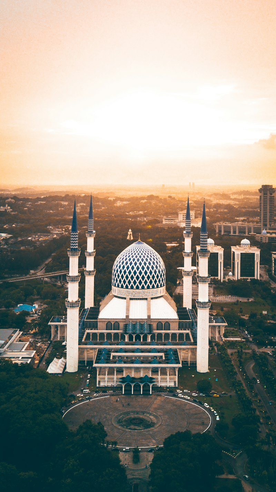

SHARED FELLOWSHIP
Shared Group Pilgrimage
For pilgrims who value community, collective chanting, shared prayer, and structured group logistics on established holy routes.
- ✦ Max 12–16 like-minded pilgrims per departure
- ✦ Accompanied by accredited spiritual scholar
- ✦ Daily morning prayer & evening reflection circles
- ✦ Sanitized luxury coach & luggage porterage